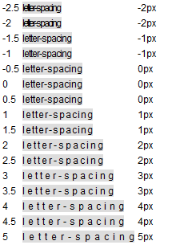
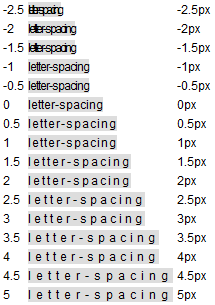
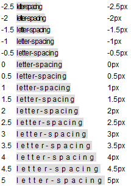
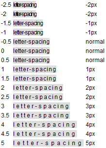

根据 W3C CSS 2.1 规范中的描述，'letter-spacing' 特性指定了文本字符间的间距特性。其取值的含义如下：
关于 'letter-spacing' 特性的详细信息，请参照 CSS 2.1 规范 16.4 Letter and word spacing: the 'letter-spacing' and 'word-spacing' properties 中的内容。
Firefox 中支持 'letter-spacing' 特性以 px 为单位时的小数数值。
各浏览器对 'letter-spacing' 特性以 px 为单位时的小数数值支持不同会造成应用了该特性的文本的宽度产生差异，进而可能影响到布局。
| Firefox |
|---|
通过规范原文可知，字符间距的算法与用户端相关。W3C 并未明确规定具体算法。
分析以下代码：
<html> <head> <style> * { font:12px Arial; } </style> </head>
<body> <table> <script> for (var i = -5; i <= 10; i++) {
document.write('<tr><td id="a' + (i / 2) + '"></td><td><span id="s' + (i / 2)
+ '" style="background:#DDD;letter-spacing:' + (i / 2) +
'px">letter-spacing</span></td><td id="c' + (i / 2) + '"></td></tr>');
} window.onload = function() { function $(id) { return document.getElementById(id); } if
(!window.getComputedStyle) { window.getComputedStyle = function($target){ return $target.currentStyle;
}; } for (var i = -5; i <= 10; i++) { document.getElementById("a" + (i / 2)).innerHTML = (i / 2);
document.getElementById("c" + (i / 2)).innerHTML = getComputedStyle(document.getElementById("s" + (i /
2))).letterSpacing; } } </script> </table> </body> </html>
上面代码创建了一系列的设置了 'letter-spacing' 特性的 SPAN 元素，其中 'letter-spacing' 的取值从 -3px 至 5px 不等，包括小数数值（如 1.5px）。并获得这些 SPAN 元素计算后的 'letter-spacing' 的值。
这段代码在不同浏览器中运行结果如下：
| IE6 IE7 IE8(Q) Opera | IE8(S) | Firefox | Chrome Safari |
|---|---|---|---|
|  |  |  |  |
可见，对于以 px 为单位的 'letter-spacing' 特性的值：
值得注意的是，px 是相对于浏览设备的像素点，通常应该为整数值。 Firefox 对小数数值的 px 的支持可以看做是对 'letter-spacing' 特性的扩展。
避免在使用 px 单位时为 'letter-spacing' 特性设置小数数值。
| 操作系统版本: | Windows 7 Ultimate build 7600 |
|---|---|
| 浏览器版本: |
IE6
IE7 IE8 Firefox 3.6.8 Chrome 6.0.472.11 dev Safari 5.0.1 Opera 10.60 |
| 测试页面: | firefox_letter_spacing.html |
| 本文更新时间: | 2010-08-11 |
Firefox letter-spacing 文字 间距 小数 decimal